A Peek at Our Code
Here you can get a glimpse of all the code beneathe the hood. If you want to explore all of our code and documents, please feel free to sift through our GitHub Repo.
XML and Document Structure
Both our group profiles and song pages begin with an About section dedicated to providing relevant background information. We did a lot of research to make sure this information was accurate and current. We also ensured that we are referencing relevant XML:IDs whenever possible to link between pages and profiles.
This "meaning" section within our song documents is meant to discuss the message, themes, and/or narrative of the song's lyrics (and video if applicable). We wrote them all ourselves, and when making them, we looked into the opinions of the general community through forum posts and comments, then into the reviews and interpretations from professional critics (typically from magazines or review sites). We also added our own personal interpretions into these as well, but we wanted to add a variety of perspectives.

Our group profiles and song pages had pretty unique structures from another. Every song was broken up into both the orignal Korean lyrics and their English translations, broken down even further into sections (verse, chorus, bridge, etc.) and then into individual lines. Each section and line has a specific number attached to it, in case we ever wanted to link to a particular verse or line (which we do in some of the song meanings!) Adding the "lineRef" attribute was very important, as that was what allowed us to do the colored line toggle you see on the song pages.
The "backVocal" and "sharedLine" elements were also really essential -- some members are well-known for their ad-libs (like J-Hope in the example below) and it would feel inaccurate and misleading if we didn't include some way for those ad-libs to be represented in our structure. It was also important, because some members (as noted in the Line Distribution section of our Analysis page) have more ad-libs than full lines.
 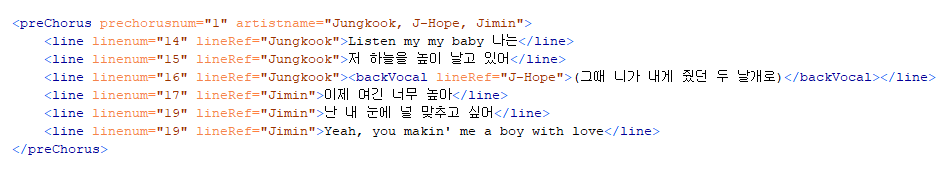
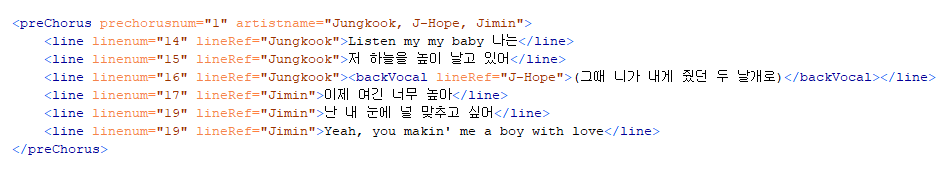
A closer look.
The profile code is less complicated, comprised mostly of these little sections that contain basic info about a given member. The reason for the "koreanName" element is that there are many people within these 10 groups that weren't born in South Korea and thus have a birth name that's not Korean (take Mark and Johnny from NCT 127 as examples, born in Canada and the US respectively). These idols, those without Korean birth names, are typically given or adopt a Korean name so that Korean-speaking people can more easily address them. This isn't always true, though -- look at Yuta, a Japanese idol without one.
The numbers within the "role" section was significant. Each member within a given group has a certain number of roles/positions that determine what they do or focus on -- some people are mainly singers, some dancers, some focus heavily on producing the music, etc. These roles aren't all the same though, they have an internal hierarchy that we wanted to show through the code. If we look at RM, he's a rapper, sure, and an important one at that, but he's BTS' leader first, then a rapper.
 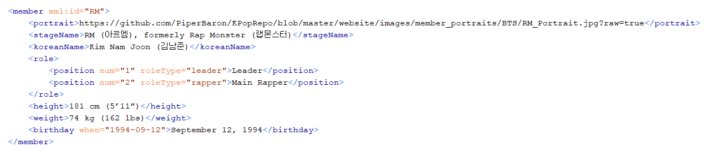
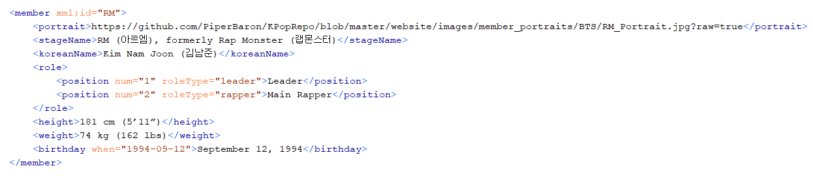
A closer look.
Schemas
Due to having two very distinct types of documents, we had to make two RelaxNG schemas for the project. We tried to make our schemas as thourough and precise as we could, as we had a lot of text that needed to be be arranged very specifically (especially the songs).
You can see that only a few elements are required in the "koreanLyrics" section (and similarlly in the "engTrans" or English traslation section). K-Pop is very forumlaic, and we knew going in that every song will have some verses, choruses, prechoruses, and a bridge, but not all songs include an intro/outro, post chorus, refrain, etc. They can also be placed in any order (other than the intro/outro), because one song may start with a verse while another might start with the chorus.
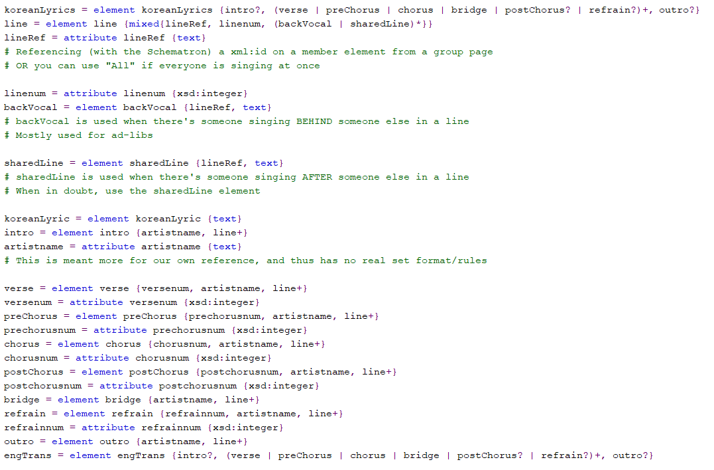 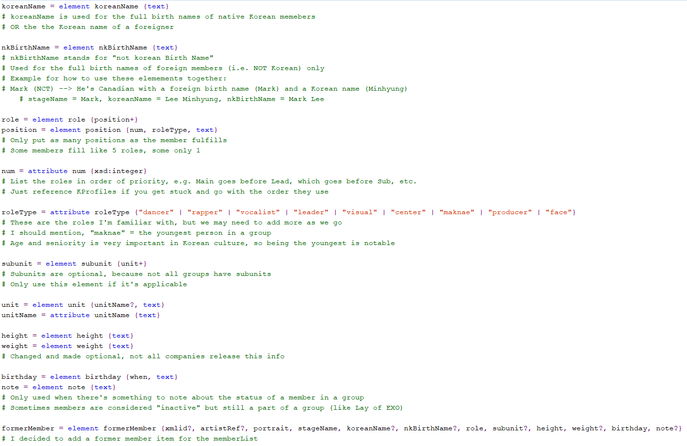We also had a Schematron file that was used to connect our group profiles and song pages. With this document, we were able to reference the XML:IDs established in a profile in the line of a song page.
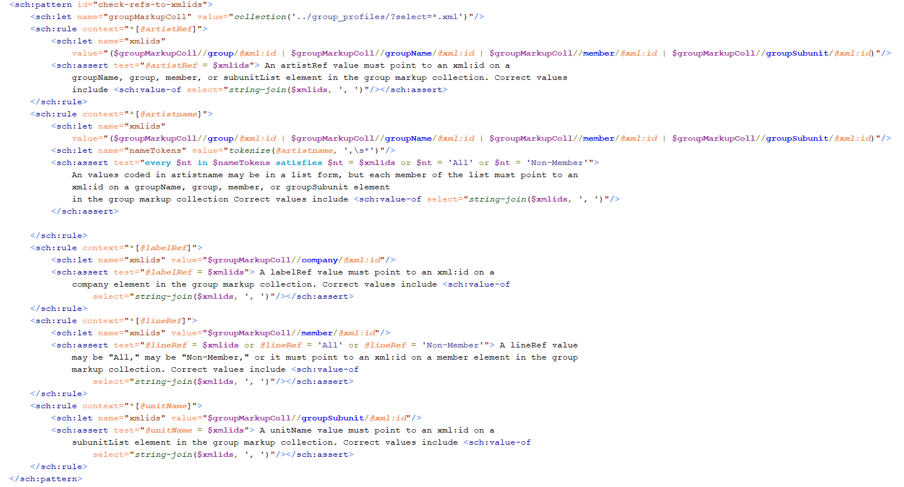XSLT
We were able to convert all of that XML to HTML for this website with XSLT. Predictably, our XSLT documents were pretty long and complicated, due to how many elements and sections we developed.
Thankfully, the XSLT for the song pages was pretty simple. Setting up the background information held in the About section was easy, and just required putting the specific pieces of information like album and release date into its own div.
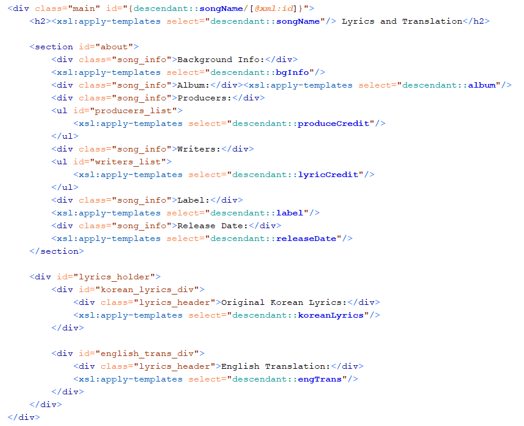Matching for the different song sections was similarlly uncomplicated. We did include those afformentioned numbers on each section into the HTML through classes.
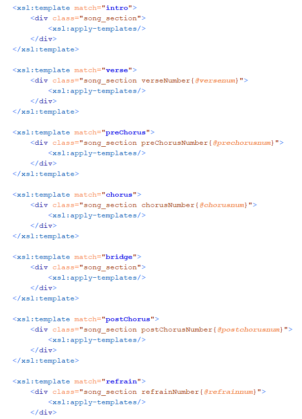For the lines, we had to add in that "lineRef" attribute as a class, so we could isolate all the lines sung/rapped by each member with the line toggle JavaScript.
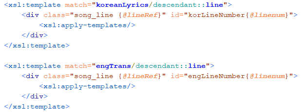The XSLT for the group profiles was a bit more complicated. We had to build these intricate nesting divs and lists that could accommodate all of the information we had on each idol. As said above, some elements like the "koreanName" and "nkBirthName" (non-Korean Birth Name) had to be made optional, while still fitting into the list of names when they were there.
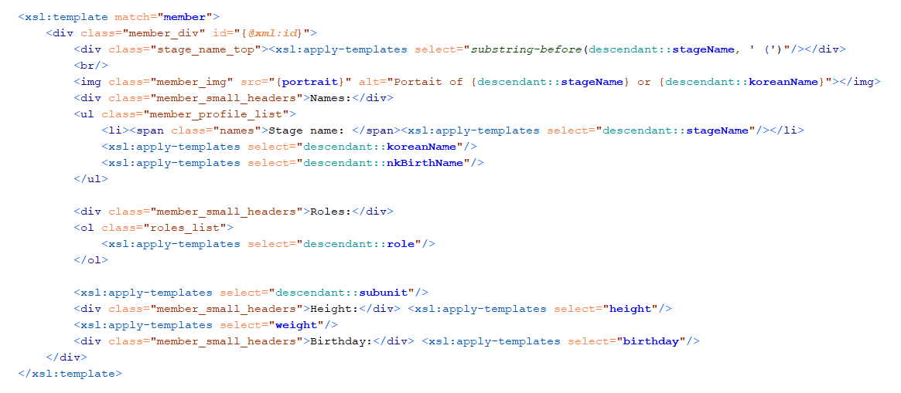